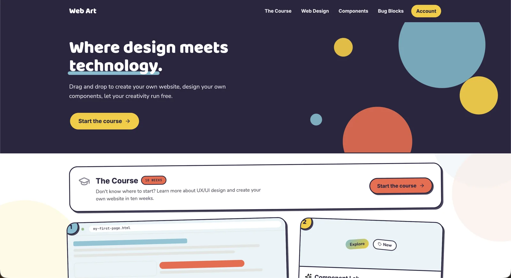
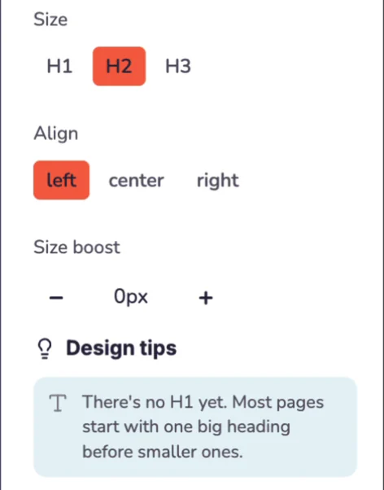
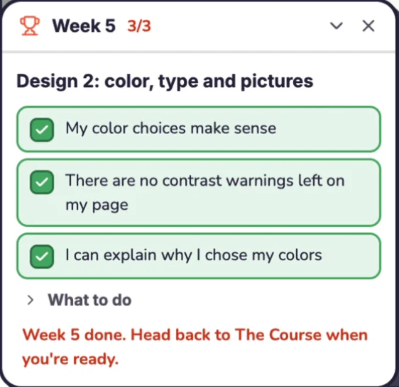

Tech Access Foundation · Volunteer Project · Web App
Web Art, a design studio for teaching UX
Overview
A design studio that teaches middle school students UX, built for Tech Access Foundation to use in its classrooms. I defined what the app is for, drafted the ten-week curriculum, set the privacy and device constraints, wrote the copy students see, and directed the build.
The problem
There was no kid-friendly tool that taught UX.
How can we teach middle school students UX in a tool that is easy to use, explains itself, and doesn't rely on AI?
Tech Access Foundation wanted something that would teach kids to design for the web. We couldn't find a kid-friendly environment that taught UX specifically, meaning one that was easy to use, explained what students were doing, and didn't rely on AI. Figma, Canva, and Wix were options, but none of them solved that problem.
Tools like these focus on visual craft, such as layout, color, and contrast. They don't give students a user, a goal, or a task, so a student can build a page that looks great and is impossible to use without ever finding out. Closing that gap is what this project is about.
The key idea
Every project starts with a person
The obvious fix was more design rules: bigger text, better contrast, more feedback. I didn't think that would work. Kids design for themselves. They pick their favorite colors and a text size their own eyes can read, and a rule like "use bigger text" gets followed once and forgotten. The core idea in UX is that you are not your user, and most of the other lessons depend on it.
So instead of adding rules, each project starts with a brief about a fictional person with a specific need, and the student designs for that person. That person isn't a guide or a mascot. They're the audience the student is designing for, and each project has a different one.
Work is checked in two ways. The app automatically checks what it can measure, like text size, contrast, and position. For everything else, it asks the student to decide, with questions like "Would this person understand this word?"



The classroom
Planning for how sessions actually run
I built the curriculum around the real classroom setup and schedule.
01
Forty minutes of work per session
Sessions are an hour, but with 7th graders, arriving, logging in, settling down, and packing up leave about 35 to 45 minutes of work. Each of the ten weekly plans is built for forty minutes, shows how the time is split, and marks a section to drop if things run long.
02
Guest volunteers from my network
I bring in people from my professional network who work in different tech roles, so students meet professionals with a range of skill sets and see the different kinds of work that go into building a product.
03
Build first, explain later
Students make a real page in week one, before they've learned anything. After that, each concept is taught as the fix for a problem they've already run into. Wireframing makes sense to a 12-year-old with a messy page to fix, and it's much harder to explain to one who has never made a page.
04
Shared Chromebooks and no logins
That's the classroom setup, so the app has no accounts, and students save work by exporting a project.
Privacy
Keeping student work on the device
All student work is stored on the student's own device. The app doesn't collect anything, and nothing leaves the browser.
Storing a child's name on a server would bring COPPA into scope, which means verifiable parental consent, a privacy policy, deletion handling, and legal review. Keeping everything on the device avoids almost all of that and lets the app run for free as a static site, which matters on a nonprofit budget.
I wrote down the tradeoffs and accepted them. Work doesn't sync across devices, clearing browser data erases it, and storage is capped at about 5MB. Accounts and cloud sync only make sense if a pilot shows the product is worth that cost. Until then, the app tells students plainly where their work lives.
"Your profile is saved on this device."
What the Account screen saysWalkthrough
Four studios and a course
Each part of the app, recorded in use.
01
The Course
Ten weekly lessons shown as an in-app slideshow. Each week introduces a few new words, one idea to understand, and a short list of what to do, then sends students into the studio to try it.
02
Web Design Studio
A drag-and-drop page builder on a 12-column grid. Students drop blocks onto the page, place them side by side, and edit each one in the Inspector, which shows design tips as they work. The studio writes the HTML and CSS behind the page as they go.
03
Component Lab
Five workspaces for buttons, badges, pop-ups, cards, and form fields. Students mix a style, colors, and text, or start from an example. A short note under each preview explains the technique, and a warning appears if the colors are hard to read.
04
Bug Blocks
Visual block coding, similar to Scratch. Students stack motion, looks, and control blocks into a script, press Run, and watch the bug on the stage follow it.
Under the hood
The project started as a single 4,842-line prototype. Before adding anything new, I had it split into 31 modules, confirmed it behaved the same as before, and moved it into a Vite project under version control. Adding features to a prototype that couldn't be changed safely would have been wasted work.
Where it stands
Private preview and curriculum review
The app is deployed as a private preview for Tech Access Foundation's feedback, with search indexing turned off. The curriculum is a draft, marked as not final, and is being reviewed by the organization's curriculum specialist. I've left open where the design briefs fit alongside the existing starter templates, because that's a curriculum decision for them to make.
I documented two known issues before anyone else ran into them.
- Drag-and-drop doesn't work on touchscreens. The HTML5 drag API doesn't respond to touch, so the app only works on laptops and Chromebooks until dragging is rebuilt with pointer events. Dragging is the main interaction, so this blocks any use on tablets.
- Phone screens are cramped. I tested four screen sizes. Laptops and Chromebooks work well. On phones the canvas gets cut off, but the app still works.
Takeaways
What I'd keep and what I'd change
Keep: data stays on the device
It ruled out sync, teacher dashboards, and saved accounts, but it means the nonprofit can put the app in front of students this term without a legal review first. Many of the good decisions on this project were about what to hold off on building.
Change: check the hardware first
I found the touch problem late, during a screen-size audit, and it limits where the app can be used more than any feature I added. Next time, I'll confirm the target hardware before designing the interaction model.